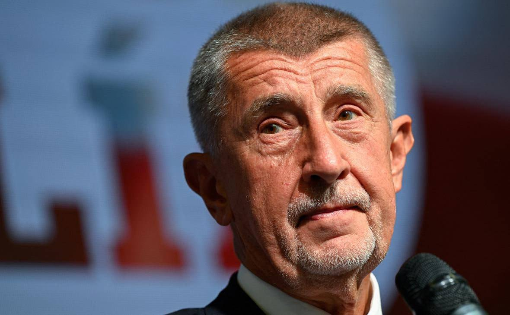

Топор Live
@toporlive
Топор Live
@toporlive
Чехия не будет гарантировать кредит ЕС для Украины премьер страны Бабиш.

⚡️Чехия не будет гарантировать кредит ЕС для Украины, — премьер страны Бабиш.
Также Бабиш заявил, что Трамп «подставил Европу», заключив сделку по дизелю с Россией.
«Мне не нравится, что в европейском бюджете [заложены] 100 млрд евро для Украины. Эти деньги должны были бы быть [предоставлены] в долг», - сказал он.
Также Бабиш заявил, что Трамп «подставил Европу», заключив сделку по дизелю с Россией.